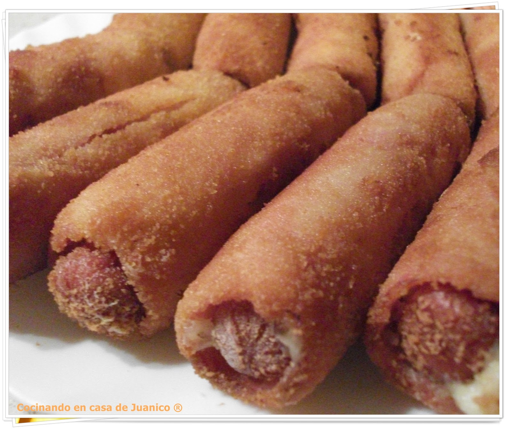
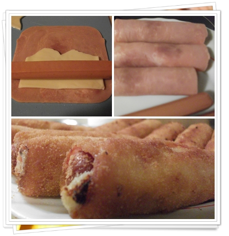
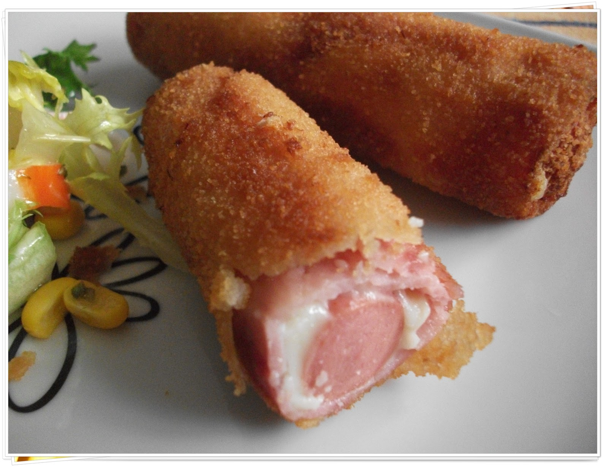
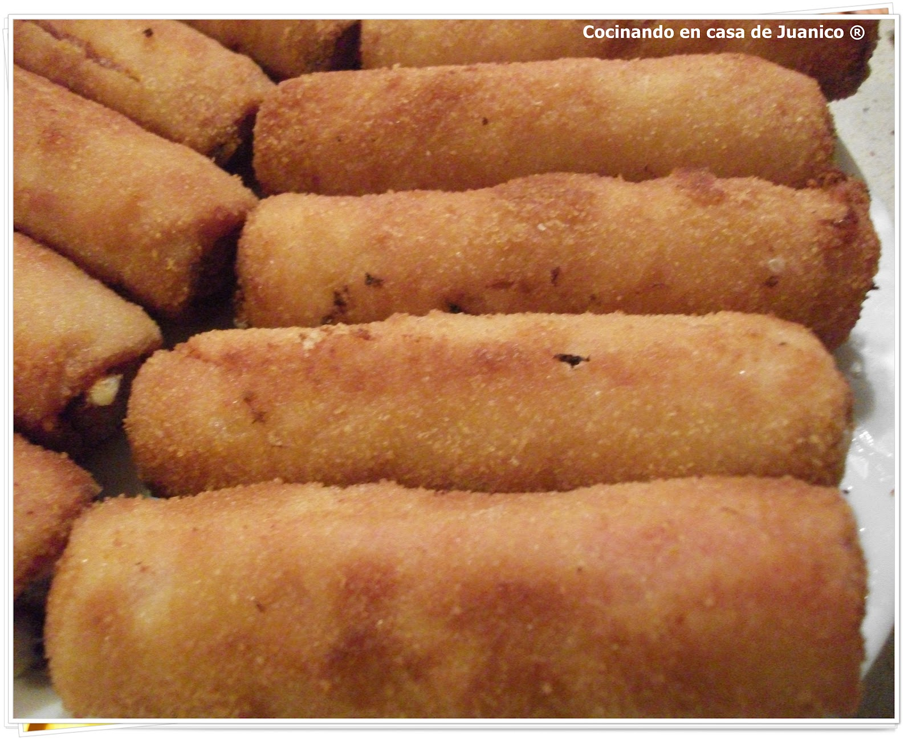

¡Vamos a hacer una maravillosa receta!
ㅤ
ㅤ
ㅤ
La elaboración es sencilla. Sobre la superficie de trabajo ponemos una loncha de jamón de york, encima media loncha de queso y sobre éstas, en un borde ponemos la salchicha. Enrollamos la salchicha en la loncha de jamón de york y queso, presionando bien para que quede bien apretado. Repetimos la misma operación con el resto de las salchichas.
Pasamos los rollitos por harina, luego por el huevo batido y por último por el pan rallado, presionando bien para que queden bien rebozados. Ponemos en una sartén abundante aceite a calentar y freímos los flamenquines hasta que estén doraditos. Los sacamos y ponemos sobre un papel absorbente para eliminar el exceso de aceite y servimos calientes.
 Video de la receta por "La cocina de casa"
ㅤ